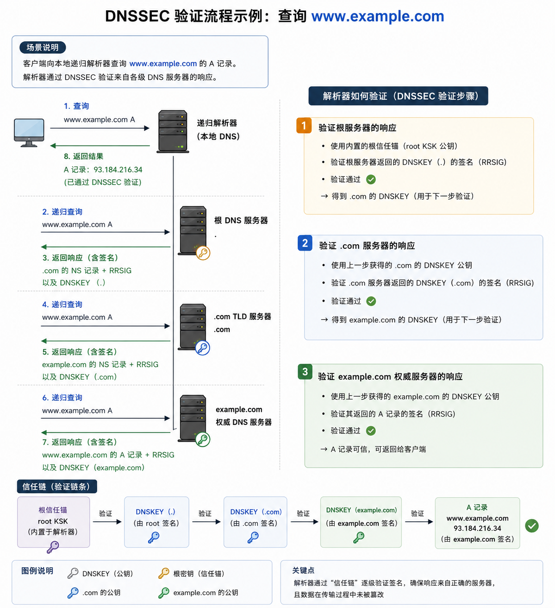

最近在处理一些关于 DNSSEC 故障的问题，在网上查阅相关信息后发现，大多数资料都偏向介绍 DNSSEC 的工作原理，但很少有人讲 DNSSEC 如何检查是否正常、业务割接应该怎么做、如何避免业务异常，以及上线后如何做持续监控。
这篇内容把这些偏实战的经验整理出来，希望能给后面要使用 DNSSEC 的工程师一些参考。
双签有效期：在密钥轮换期间，新旧密钥和签名同时可用的过渡时间。它的作用是避免全球递归解析器在缓存更新过程中因为信任链断裂而返回 SERVFAIL。
以查询 www.example.com 为例，解析器会从父区逐步向下验证：先确认 DS 与 KSK 的匹配关系，再确认 KSK 对 ZSK 的签名有效，最后验证 ZSK 对业务记录的 RRSIG 是否正确。只有整条链都成立，递归解析器才会认为结果可信。

第一步是确认“签名是否真的完成”，不要只看到配置开启就认为 DNSSEC 已经正常工作。
签名完成情况可以通过两个命令来检查：
dnssec-verify -o zonename zonefile：BIND 提供的 DNSSEC 离线校验工具，用来检查一个已经签名的 zone 文件是否满足 DNSSEC 要求。rndc signing -list zonename：向 BIND 权威 DNS 发送控制指令，用于查看指定 zone 当前的 DNSSEC 签名状态。dnssec-verify -o example.com example.com.zone
rndc signing -list example.com签名完成之后，下一次重点就是 ZSK 轮转时的重签。需要持续检查 RRSIG 的到期时间，特别是是否存在 7 天内即将过期但还没有完成重签的记录。
一般默认 BIND 会在记录即将到期前约 7.5 天开始执行重签动作，所以在生产中通常会写自定义脚本扫描 RRSIG 的有效期。如果发现已经进入 7 天窗口却仍未完成重签，就要立刻检查 zone 文件和签名状态。
KSK 轮转真正的风险点不在生成新密钥，而在 DS 记录是否及时同步到父区。旧 KSK 和新 KSK 之间必须配置双签有效期，保证两套信任链在过渡期内都可用。务必要在这段时间内把新的 DS 记录更新到父区，否则会直接导致 DNSSEC 校验失败，域名对外响应可能变成 SERVFAIL。
场景：将旧 DNS 系统迁移到新的 DNS 系统，同时新系统启用了 DNSSEC。为了降低风险，建议分批迁移域名，避免新系统 DNSSEC 配置问题影响大面积业务。
假设要迁移的域名是 example.com，推荐的割接步骤如下：
1. TTL 管理优先级极高：DS 和 NS 记录的 TTL 会直接决定割接和回退的速度，所有窗口期都要按 TTL 反推。
2. 先切走旧信任链，再启用新签名：如果迁移的是一套全新的 DNS 系统，先删除旧 DS 并等待旧 NS / DS TTL 过期，再在新系统启用 DNSSEC 并回填新的 DS 记录，会更符合迁移窗口管理逻辑。
3. 分批迁移优于一次性迁移：哪怕流程设计得很完整，也建议先用少量业务域名做验证，再逐步放大范围。
4. 监控不能只看服务存活：DNSSEC 场景下更需要关注 RRSIG 有效期、DS 同步状态、SERVFAIL 比例、递归端验证结果等专门指标。